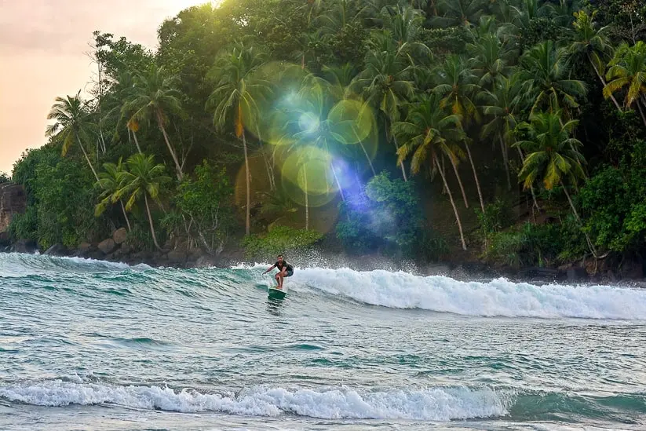

Hiking
Sri Lanka is special hiking destination. There are various types of trails that are suitable for all levels of experience, such as easy wals and more intense ones. The country also has over 400 waterfalls.
Here are the best hiking and trekking trails in Sri Lanka,
- Sigiriya Rock
- Ella
- Horton Plains and World's End
- Knuckles Range
- Adam's Peak
Safari

Due to its abundance of wildlife, Sri Lanka has become one of the most sought-after destinations for tourists. There are numerous national parks and areas that are home to various animals such as elephants and leopards. Sri Lanka has 26 national parks, which are mainly protected by the country's wildlife conservation department.
National Parks for most thrilling Sri Lanka Safari
- Yala National Park
- Minneriya National Park
- Udawalawe National Park
- Wasgamuwa National Park
Surfing
The weather patterns in the country are known to produce varying levels of calm and choppy waves on different parts of the coast. In the south, you'll find perfect weather from November to May, while in the east, you'll geta taste of more intense waves during April to October. Some of the most popular beaches in the country are Arugam Bay and Hikkaduwa in the east, and Unawatuna and Weligama in the southwest.